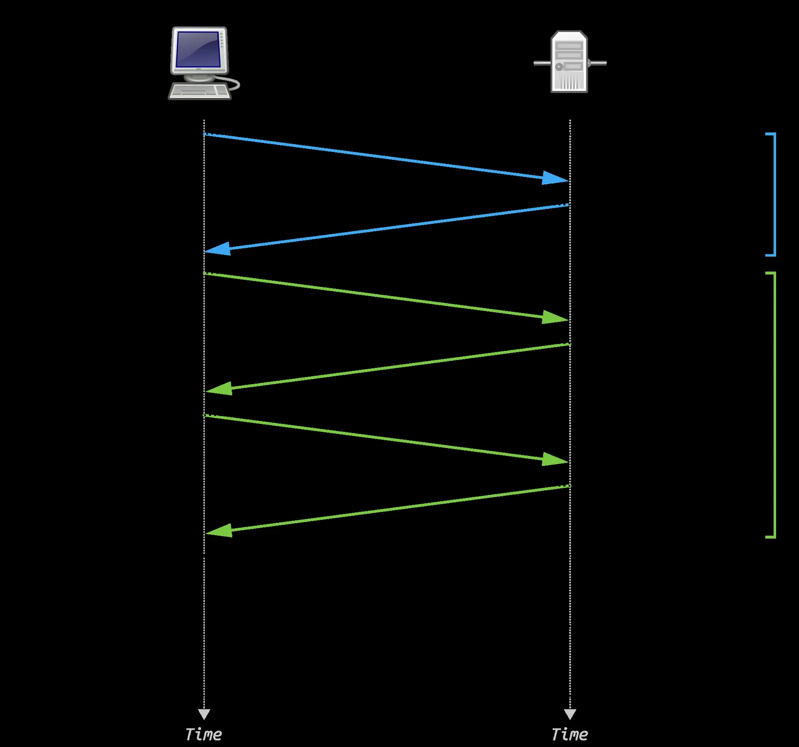
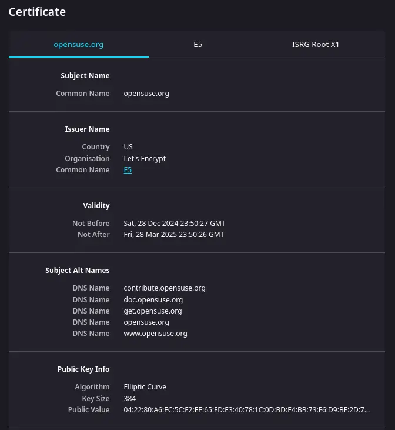

Short answer
TLS protects the connection used to fetch the document. If the certificate does not match the hostname or has expired, clients may never read the HTML. A valid certificate still does not write the specification.

Definition
Reachability includes name resolution, connection, and a response body. Certificate errors sit in the middle of that chain. SEO Health can report that the live URL could not be fetched. It should not be confused with SEO Growth, which asks what coverage is missing after the page is readable. Do not treat the padlock as evidence of a product claim.
What belongs on the page
Open the canonical HTTPS URL and confirm the certificate names that host and is current. Fetch the body and confirm the subject is in the HTML. Renew or reissue before the fetch starts failing. Redirect HTTP to the same canonical host rather than to an unrelated certificate name.
What to check
- The certificate matches the canonical hostname.
- The certificate is current.
- HTTP redirects to that HTTPS URL.
- The body, not the padlock, carries the specification.
A practical example
The certificate covers www, but the canonical host is the apex name, so fetches of the printed URL fail the name check. The repair serves a certificate for the canonical host and 301s the other name to it. The specification is then re-read from HTML. No trust award is claimed.

What this does not claim
A valid certificate does not guarantee rankings or AI citations. Mika does not sell trust badges.
Where Mika Visibility files this
TLS is a condition of the fetch. The page basics are still the words in the response. Mika Visibility files this on the SEO Health track, with crawlability, status codes, and page basics. SEO Growth remains a separate question about coverage that is still unwritten. GEO remains a separate question about whether a careful reader can find a supportable answer. There is no blended overall score.
FAQ
What does a broken certificate do to a fetch?
TLS protects the connection used to fetch the document. If the certificate does not match the hostname or has expired, clients may never read the HTML. A valid certificate still does not write the specification.
What does a valid certificate not provide?
Reachability includes name resolution, connection, and a response body. Certificate errors sit in the middle of that chain. SEO Health can report that the live URL could not be fetched. It should not be confused with SEO Growth, which asks what coverage is missing after the page is readable. Do not treat the padlock as evidence of a product claim.
Does TLS guarantee rankings?
A valid certificate does not guarantee rankings or AI citations. Mika does not sell trust badges.
Next step
Run a structured SEO + GEO audit to see health findings, growth gaps, and a blueprint you can act on.
Clearer entities, answers, evidence, and context make pages easier to understand and reference. Results in any answer product are not guaranteed.